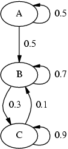

The IP-Noise Simulator is a simulator for TCP/IP networks noise that can run on top of a Linux 2.4.x system. It is available in two versions: one as a stand-alone user-level program that can run from the command line. The second one is a kernel module, that should be loaded with insmod.
TCP/IP noise generation involves the deliberate dropping or delaying of packets sent over the TCP/IP network. The simulator can distinguish between the various protocols above the IP level and arbitrate them differently accordingly. However, the contents of the packets cannot affect its decision in any way.
Note that it is assumed that the network congestion is independent of what occurs in the applications that are tested with the noise. Thus, the load of the network does not affect the simulator's behaviour.
We intend the simulator to be used to test the robustness of protocols, and see how immune they are to network noise. The simulator is designed to be flexible and simulate various network noise conditions, in a manner that is accurate enough for most needs.
The project was initiated by Lavy Libman, and was written by Shlomi Fish and Roy Glasberg under his supervision. It was conducted with the help and resources of the Computer Networks Lab of The Technion.
We would like to thank the various people in the Israeli Group of Linux Users who provided important help and input during the various stages of the project: Omer Mussaev, Guy Keren, Mulix and others. We would also like to thank the developers of the Netfilter firewalling stack of the Linux Kernel 2.4, which gave us most of the necessary kernel functionality, and made our work much easier.
We would also like to thank the FOKUS group for creating and maintaining the BerliOS service, whose on-line resources we were able to use.
The simulator requires a GNU/Linux system running the Linux Kernel version 2.4.x. IP-Tables has to be available as a kernel module, as is the IP-Queue module.
The translator which is written in Perl is distributed under the MIT X11 license. The compiler is distributed under a dual GPL and MIT X11 license except for the following modules:
The Perl arbitrator is no longer maintained and is only useful as a reference implementation. We cannot guarantee that it does not contain bugs. It is distributed under the MIT X11 license.
In order to use the simulator, the IP-Tables kernel module must be compiled, and available for loading. Specifically, the ip_queue module should be available. perl v. 5.6.1 or later must be available on the system in order to configure the simulator.
libipq which is part of the iptables userland distribution should be installed and available on the system, as the userland simulator makes use of it.
Download and unpack the latest distribution. cd to the directory C/arbitrator. In order to compile the userland simulator type "make".
In order to compile the kernel module-based simulator type "make -f Makefile kernel". In case you don't have an i386-compatible machine, you should edit the file Makefile.kernel and change the line "I386 = 1" to "I386 = 0".
Designate a directory in which two named pipes will be put. These pipes will be used for communication between the arbitrator and the configuration utility. The directory should be accessible both by root and by the user, with which you intend to run the configurator (which we recommend should not be root).
In this directory type the following set of commands as root:
# pwd /ip-noise #mkfifo to_arb #mkfifo from_arb #chown ipnoise.ipnoise to_arb from_arb #chmod 600 to_arb from_arb #chmod 700 . #chown ipnoise.ipnoise .
ipnoise.ipnoise is the user-name and group of the user that will be used to invoke the configurator. Now set the environment variable IP_NOISE_UM_ARB_CONN_PATH to the full path of this directory in the initial shell scripts of both root and the ipnoise user.
Under the home directory of the user which will run the module, type the following commands as root:
# mknod iface_dev c 254 0 # chown ipnoise.ipnoise iface_dev # chmod 600 iface_dev
ipnoise.ipnoise is the user-name and group of the user which will run the configuration utility.
The simulator intercepts packets from the kernel by means of the IP-Tables framework. It receives those packets (and only those packets) that were designated with the QUEUE rule. Normally, you would like to configure the IP-Tables rules, so that important communication will not be interfered with. Only the ports, protocols and IPs of interest need to be transferred to the arbitrator in order to decide their verdict.
Describing how to set up IP-Tables rules is out of the scope of this article. We refer you to the Internet for further information. However, we will present a script that we use to set up the IP-Tables rules on our Mandrake Linux 8.1 system:
#!/bin/sh
UDP_PORTS="67 111 135 137 138 161 513 520 525 631 2571"
TCP_PORTS="6346 6347 5901"
IFACES="eth0 lo"
for iface in $IFACES ; do
for port in $UDP_PORTS ; do
/sbin/iptables -A INPUT -i $iface -j ACCEPT -p udp --destination-port $port
done
for port in $TCP_PORTS ; do
/sbin/iptables -A INPUT -i $iface -j ACCEPT -p tcp --destination-port $port
/sbin/iptables -A INPUT -i $iface -j ACCEPT -p tcp --source-port $port
done
/sbin/iptables -A INPUT -i $iface -j QUEUE -p tcp
/sbin/iptables -A INPUT -i $iface -j QUEUE -p udp
/sbin/iptables -A INPUT -i $iface -j QUEUE -p icmp
done
|
Note that the IP-Noise kernel module replaces the IP-Queue mechanism of the Linux kernel, and both cannot be used simultaneously.
After the IP-Table rules has been set up follow the following steps:
To unload it, simply type Ctrl+C at the terminal in which it was invoked.
After the IP-Tables rules have been set up, cd to the C/arbitrator directory of the distribution as root. There type insmod ./ip-noise-arb.o.
To unload it type rmmod ip-noise-arb as root.
To configure an arbitrator one has to prepare a configuration file that contains the description of the noise behaviour, in the syntax that was defined for this purpose (which will be described below). After the file has been prepared, cd to the perl/compiler directory of the distribution. Then type perl tests/translator.pl or perl tests/ker_translator.pl (for the userland and kernel-level arbitrators respectively) followed by the path of the configuration file.
Markov chains are similar in concept to state machines, except that the next state is determined according to a probability factor rather than the input to the state machine. In each iteration, a probability value between 0 and 1 is determined randomly (and uniformly) and based on it, the next state is deduced.
The following figure, displays a sample Markov chain:

As can be seen, after an iteration step, "A" switches to itself with a probabilty of 0.5, and to "B" with a probability of 0.5. "B" and "C" switch to themselves and to one another with a various probabilities. One can notice, that once the chain leaves "A", it cannot return to it again.
The sum of the probabilities of the links that emerge out of a certain state must be equal to 1, so the chain will always know to which state to go to next. In our implementation of Markov chains, we assumed that in case, the sum of emerging probabilities is less than 1, than the remainder instructs the chain to remain in the current state. If the sum of probabilites is greater than 1, a compilation-time error will be reported.
One can model memory-less noise using a Markov chain, in which each state dictates a different statistical behaviour of the noise.
A packet can be delayed by a certain amount of milliseconds. This delay can be determined randomly, by specifiying a certain type of statistical distribution or another.
One can specify to drop the packet altogether representing a loss of a packet along its route.
One can specify to simply "accept" the packet and send it on its way. For all practical purposes, an accept is treated as a delay of 0.
An exponential delay is a distribution of a delay according to the formula F(t)=1-e-λt. The lambda factor can be determined by the user.
This is a generic delay type that can be used to model an arbitrarily complex delay function. In it one specifies points along the randomosity factor from 0 to 1. For each such point, one specifies the delay at that point. Between two adjacent points, one interpolates their end-values linearily.
In this delay type, the delay is chosen uniformly between a minimum and a maximum specified by the user.
A delay can be either stable or non-stable. In a stable delay, the packets are sent on their way at the same order in which they arrived. In a non-stable delay, their order may be mixed. One can decide whether to issue a stable or non-stable delay by specifiying a probability factor.
The arbitrator contains several markov chains which are run and processed in parallel. Each chain has a chain filter that specifies which packets it wishes to process. When a packet arrives at the arbitrator, it is passed to all the chains, except for a special chain which is designated as the default chain. Each chain determines on its own what to do with the packet, without consulting the other chains.
A packet that is not processed by any chain is passed to the default chain, whose filter (if any) is ignored. If more than one chain processed the packet, then the following rules apply:
1. If the packet was dropped by any chain, then it will be dropped. (i.e: each chain can veto the verdict to a drop)
2. If none of the chains dropped it, then the delay the packet would experience would be the sum of the delays of the chains. (and as previously mentioned, an accept verdict is considered as a delay of length 0)
In each chain, the states are switched at exponential times from the time of the last switch. Each state determines the probabilities for a packet being dropped, delayed or accepted and the distribution of the delay. It also determines the probability for a stable delay.
A chain filter determines which packets are processed by a chain according to their TCP/IP information. The motivation for a chain filter is that different parts of the network being modelled may experience different conditions. Therefore, packets need to be treated differently based on their destination, source and other TCP/IP properties.
In the IP-Noise Simulator, packets can be filtered according to the following factors: